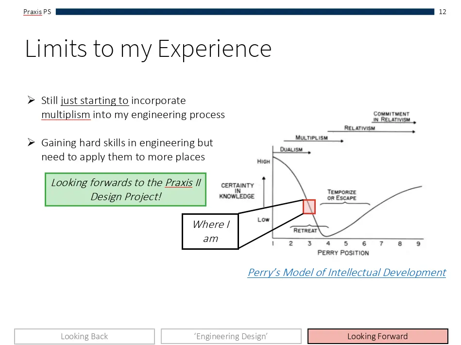

Engineering Portfolio
Luyu - ESC102 - Praxis II - Last Updated 10/04/26
Hi, I'm Luyu. A UofT Engineering Science student. This portfolio serves to communicate my engineering process for some of the coursework I've been involved with in my freshman year. It draws upon my experiences, and seeks to describe them in the context of Praxis.
To navigate this site, you may use the header at the top or the buttons below. The sections are organized as
such:
I hope you enjoy your journey through my portfolio!
Position Statement
About Me
Engineering has been a field that's been where I thought I'd find myself in for the majority of my life. From back when I was younger playing with legos, to when I was coding projects on GitHub, to more recently, creating experimental setups for science experiments. All of these experiences contributed to my feelings toward engineering, leading me to join Engineering Science at UofT.
Back in January, I wrote my first position statement regarding how I viewed engineering, design, and engineering design in the context of my past experience. A video of it can be found here.
What's Changed?
In the past few months, my experience in formal engineering has effectively doubled (having now completed my second semester). This brings with it changes to how I view myself in the context of engineering and design. Before we discuss that however, I shall clarify my biases.
Biases
It is important to consider the biases I have when discussing my own position. I have identified the following as my most influential biases:
Perry's Model of Intellectual Development
Perry's model can help me map myself into an axis of development. Having just finished Praxis II, I can reflect on my intellectual progression. In my view, I have moved from dualism, prior to coming to EngSci, to multiplism around January, and now into relativism.
Before January, prior to coming to EngSci, I consider myself to have had a quite dualistic view of engineering. There was very little to consider outside of whether a solution worked or didn't.
Back then, I figured I was starting to move into multiplism; a stage where uncertainty is dominant. As I outlined in my statement, I was often unsure of whether a solution could be considered any better than another due to the complexity of stakeholders.

Now having finished Praxis II, I feel I have moved into relativism. Relativism is defined by being able to
consider a wide
number of factors in making decisions, such as various types of contextual evidence.
Evidence-based
reasoning formed a large
core of
how we operated as a team for Showcase. Despite having an enormous amount of ideas, we were able to use
mental frameworks to help us quickly iterate at a speed far faster than in the
first semester. While I don't believe I have become fully committed to relativism, which is the final stage
in Perry's model, I do more often nudge and remind myself of relativism.
For instance, when converging between a design that required electricity and one without following our Beta release, we returned to framing. We investigated further regarding our stakeholder's situation to allow us to make a more evidence-based decision. More detail regarding our FDCR processes for Showcase can be found under the Project 1 tab.
For the sake of organization and avoiding this section becoming too long-toothed, under each project tab I
include a reflection of it's impact on my position.
You may be seeing this cat a lot \(^-^)/